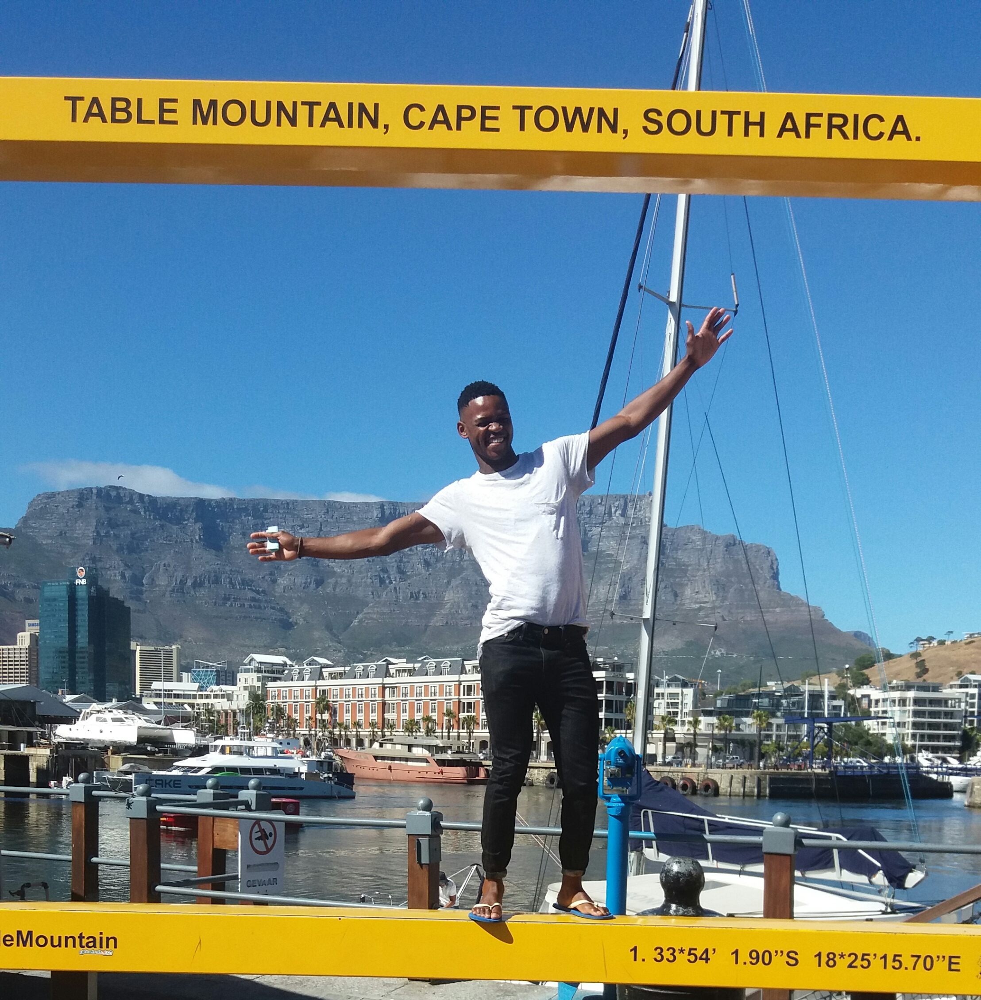
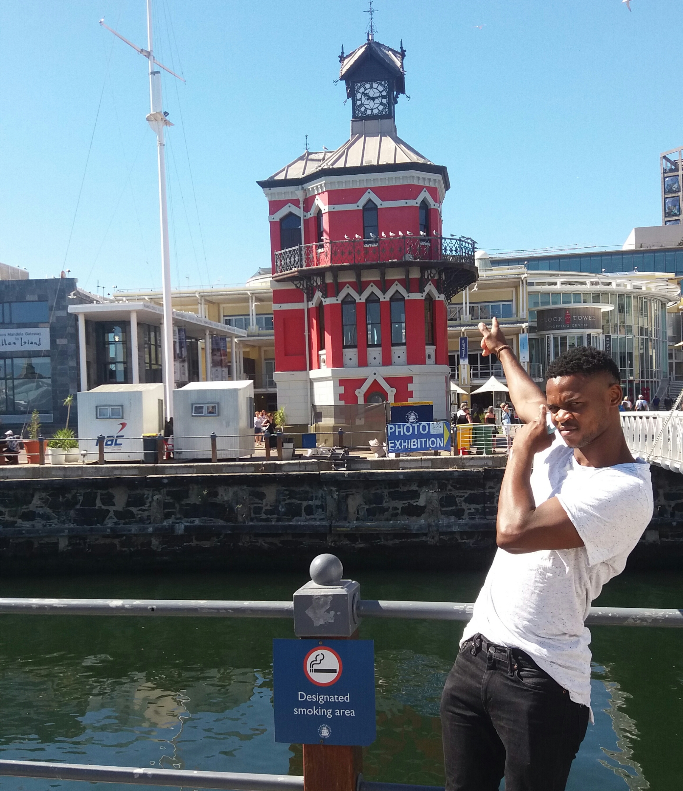
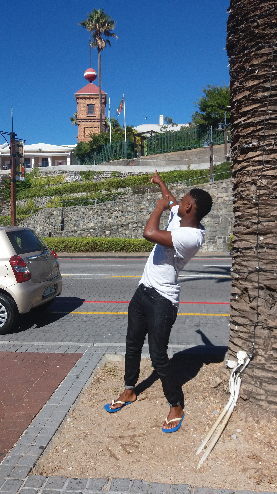
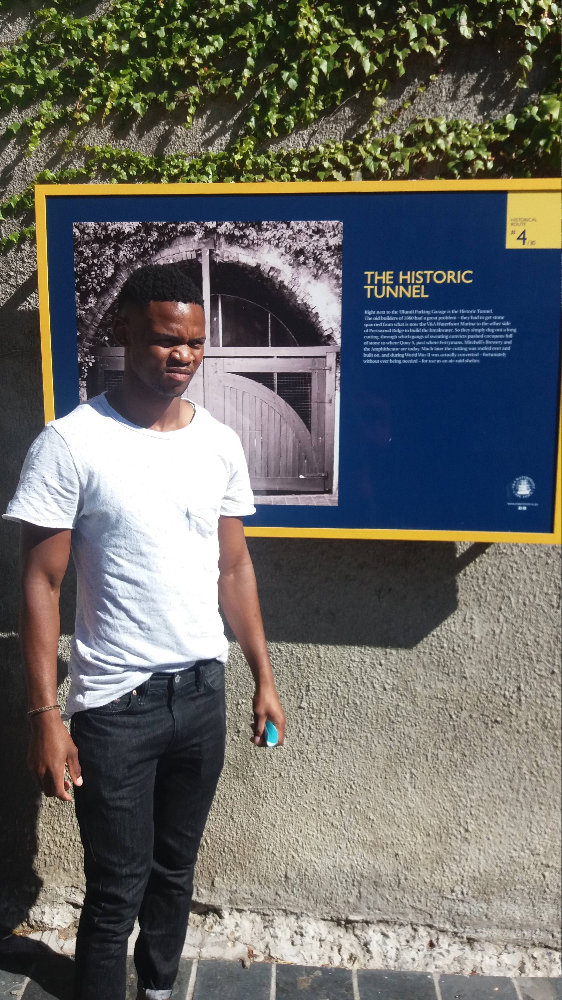

Lubabalo Lubba Mkiva
Hi.This is me guys
Egypt
I would like visit this Alexandria in Egypt because it's more attractive.

- Alexandria is a Mediterranean port city in Egypt.
- The city also has Greco-Roman landmarks, old-world cafes and sandy beaches.
- Its 15th-century seafront Qaitbay Citadel is now a museum.
Foreign Language
Beja
| English | Beja |
|---|---|
| Salute | saudação |
| Good afternoon | boa tarde |
| what is your name | Qual é o seu nome |
History Places In Waterfront
Clock Tower
- The Clock Tower has begun to lean to one side, about 50 mm. This has since been arrested.
- On the second floor there is a decorative mirror room which allowed the captain an overall view of harbour activities.
- On the ground floor is a tidal gauge mechanism which was used to check the level of the tide for ships entering or leaving the docks.
Time Ball Tower
- The time ball is an obsolete time signalling device. It consists of a large, painted ball that is dropped at a predetermined time, principally to enable navigators to verify their marine chronometers from their ships offshore.
- The first time-ball in Cape Town stood on a wooden tower mid-19th century in Observatory. With the development of the docks in the 1860's this ball was no longer visible to ships in the harbour.
- The second time-ball was built on the slopes of Signal Hill. This was replaced by this tower in the V&A Waterfront.
Portswood Tunnel
- it's more attractive and they way of the builiding it's interesting